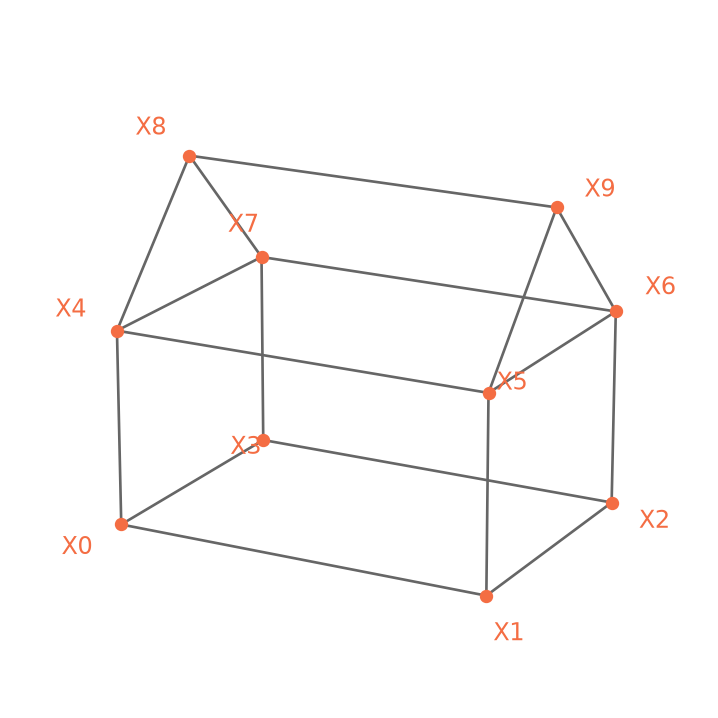
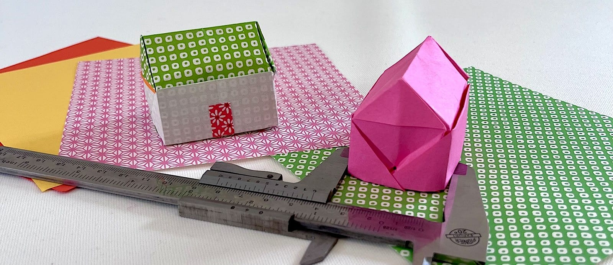

ideal_house.json.a folded paper object with (approximately) known measurements

Most of the examples on this site revolve around the same object: a small origami house folded from a single sheet of paper. It stands about four centimetres tall, it sits on a table without being held, and, if you start from a standard 15 × 15 cm origami sheet, its measurements are roughly those recorded here.
Roughly, because a folded object is only as accurate as the person folding it, and I am no master. The model below is an idealization of a real piece of paper, and the two do not agree to the last millimetre.
The model is Easy Origami House by Leyla Torres, whose video tutorial is the place to learn it.
Three practical suggestions when you fold your own model. Use matte paper rather than glossy, because specular highlights are unkind to feature matching. Press the creases firmly: a rounded edge is a vertex that shifts by a few pixels between views, and that error propagates all the way to the reconstruction. And prefer paper with some texture to it.
Then break the symmetry. A few pen marks, a scribble on one wall or a door will do the job, and it will help disambiguate the 3D reconstruction.
The fold divides the sheet into a grid of six, so every dimension is a multiple of a single unit:
\[u = \frac{\text{sheet side}}{6} = 2.5\ \text{cm}\]
Three of the four faces sit directly on that grid. The long wall spans two squares, so it is \(2u\) wide and \(u\) tall; each roof slope is one square, so it measures \(u\) from eave to ridge.
The depth is the interesting one. It is not on the grid at all: the two roof slopes meet at right angles, so the gable is an isosceles right triangle with legs \(u\), and the depth is its hypotenuse.
\[\text{depth} = u\sqrt2 \approx 3.54\ \text{cm}\]
The ridge then rises by half the depth — that is, \(u/\sqrt2\) — and the total height is the wall plus that rise.
| Quantity | In units of \(u\) | cm |
|---|---|---|
| Long side | \(2u\) | 5.00 |
| Wall height | \(u\) | 2.50 |
| Roof slope | \(u\) | 2.50 |
| Depth | \(u\sqrt2\) | 3.54 |
| Ridge rise | \(u/\sqrt2\) | 1.77 |
| Total height | \(u\left(1 + \tfrac{1}{\sqrt2}\right)\) | 4.27 |
So the whole model follows from the size of the sheet. Fold from a 20 cm square instead and every number scales with it; nothing else changes.
Nothing here was measured, which is the point — a fold is a construction, and a construction can be reasoned about.
The vertices are named by position:
X0–X3 |
the four bottom corners, starting front-left and going clockwise seen from above |
X4–X7 |
the four eaves, directly above X0–X3 |
X8, X9 |
the two ends of the ridge, left and right |
The full model — coordinates, edges, and the naming convention — lives in data/dojo_house/ideal_house.json, and the notebooks read it from there.

ideal_house.json.The edge X0–X1, the bottom of the front wall, is the one used to fix the global scale when a reconstruction is recovered only up to similarity. Its length is recorded separately in the annotation file, so that the notebook takes the number from the data rather than from the text.
The model is a description of one particular origami house, not a universal constant. If you fold your own with different proportions, measure it, edit the dimensions in ideal_house.json, and everything downstream continues to work — the synthetic scene, the projections, the reconstruction, the error against ground truth.
Fold your own house, and run the notebooks on it. See what happens, the interesting part is not when the reconstruction works, but when it doesn’t, and you have to decide whether to blame the algorithm or the ruler.
---
title: "The Origami house"
subtitle: "a folded paper object with (approximately) known measurements"
---
{fig-align="center" width="70%"}
Most of the examples on this site revolve around the same object: a small
origami house folded from a single sheet of paper. It stands about four
centimetres tall, it sits on a table without being held, and, if you start from
a standard 15 × 15 cm origami sheet, its measurements are roughly those recorded
here.
Roughly, because a folded object is only as accurate as the person folding it,
and I am no master. The model below is an idealization of a real piece of paper,
and the two do not agree to the last millimetre.
## Folding one
The model is *Easy Origami House* by Leyla Torres, whose
[video tutorial](https://www.youtube.com/watch?v=jtNv2N8CVyw) is the place to
learn it.
Three practical suggestions when you fold your own model. Use matte paper rather than glossy, because specular highlights are unkind to feature matching. Press the creases firmly: a rounded edge is a vertex that shifts by a few pixels between views, and that error propagates all the way to the reconstruction. And prefer paper with some texture to it.
Then break the symmetry. A few pen marks, a scribble on one wall or a door will do the job, and it will help disambiguate the 3D reconstruction.
## The geometric model
The fold divides the sheet into a grid of six, so every dimension is a multiple
of a single unit:
$$u = \frac{\text{sheet side}}{6} = 2.5\ \text{cm}$$
Three of the four faces sit directly on that grid. The long wall spans two
squares, so it is $2u$ wide and $u$ tall; each roof slope is one square, so it
measures $u$ from eave to ridge.
The depth is the interesting one. It is not on the grid at all: the two roof
slopes meet at right angles, so the gable is an isosceles right triangle with
legs $u$, and the depth is its hypotenuse.
$$\text{depth} = u\sqrt2 \approx 3.54\ \text{cm}$$
The ridge then rises by half the depth — that is, $u/\sqrt2$ — and the total
height is the wall plus that rise.
| Quantity | In units of $u$ | cm |
|----------|-----------------|-----|
| Long side | $2u$ | 5.00 |
| Wall height | $u$ | 2.50 |
| Roof slope | $u$ | 2.50 |
| Depth | $u\sqrt2$ | 3.54 |
| Ridge rise | $u/\sqrt2$ | 1.77 |
| Total height | $u\left(1 + \tfrac{1}{\sqrt2}\right)$ | 4.27 |
: {tbl-colwidths="[36,32,32]"}
So the whole model follows from the size of the sheet. Fold from a 20 cm square
instead and every number scales with it; nothing else changes.
Nothing here was measured, which is the point — a fold is a construction, and a
construction can be reasoned about.
The vertices are named by position:
| | |
|---|---|
| `X0`–`X3` | the four bottom corners, starting front-left and going clockwise seen from above |
| `X4`–`X7` | the four eaves, directly above `X0`–`X3` |
| `X8`, `X9` | the two ends of the ridge, left and right |
: {tbl-colwidths="[20,80]"}
The full model — coordinates, edges, and the naming convention — lives in
[`data/dojo_house/ideal_house.json`](https://github.com/magrilu/cv-dojo/blob/main/data/dojo_house/ideal_house.json),
and the notebooks read it from there.
```{python}
#| echo: false
#| fig-cap: "The idealized wireframe, drawn from `ideal_house.json`."
#| fig-align: center
import json
from pathlib import Path
import numpy as np
import matplotlib.pyplot as plt
ACCENT = "#F46D43"
house = json.loads(Path("data/dojo_house/ideal_house.json").read_text())
V = {k: np.array(v, float) for k, v in house["vertices"].items()}
centre = np.mean(list(V.values()), axis=0)
fig = plt.figure(figsize=(7, 4.6))
ax = fig.add_subplot(111, projection="3d")
for a, b in house["edges"]:
ax.plot(*zip(V[a], V[b]), color="0.4", lw=1.0)
for name, P in V.items():
ax.scatter(*P, s=16, color=ACCENT, depthshade=False, zorder=5)
off = P - centre
off[:2] = 0.55 * off[:2] / (np.linalg.norm(off[:2]) or 1)
off[2] = 0.28 * np.sign(off[2])
ax.text(*(P + off), name, fontsize=9, color=ACCENT,
ha="center", va="center")
d = house["dimensions_cm"]
ax.set_box_aspect((d["long_side"], d["depth"], d["total_height"]))
ax.view_init(elev=18, azim=-62)
ax.set_axis_off()
plt.show()
```
The edge `X0`–`X1`, the bottom of the front wall, is the one used to fix the
global scale when a reconstruction is recovered only up to similarity. Its
length is recorded separately in the annotation file, so that the notebook takes
the number from the data rather than from the text.
## Making it yours
The model is a description of one particular origami house, not a universal
constant. If you fold your own with different proportions, measure it, edit the
dimensions in `ideal_house.json`, and everything downstream continues to work —
the synthetic scene, the projections, the reconstruction, the error against
ground truth.
Fold your own house, and run the notebooks on it. See what happens, the
interesting part is not when the reconstruction works, but when it doesn't, and
you have to decide whether to blame the algorithm or the ruler.